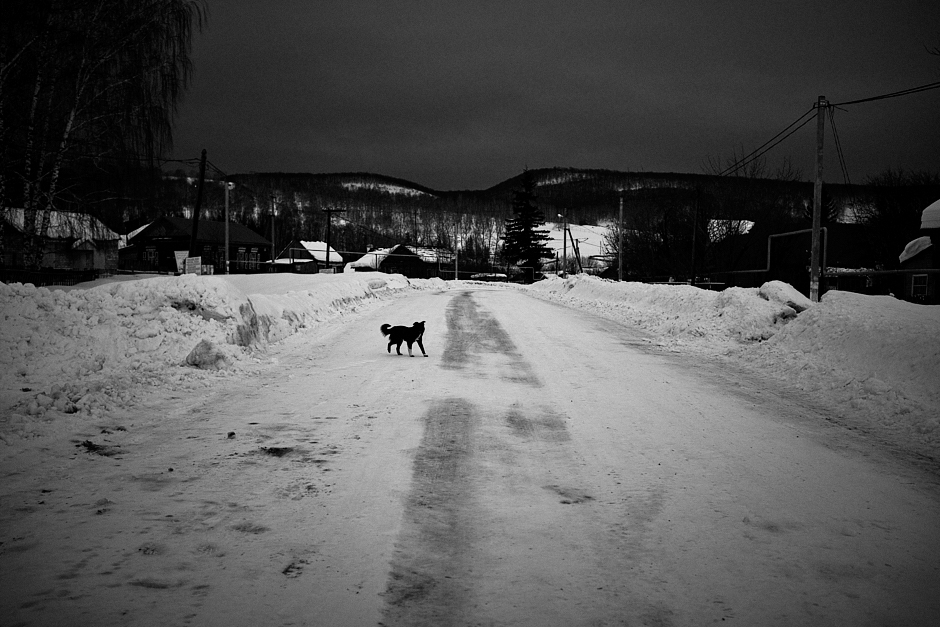
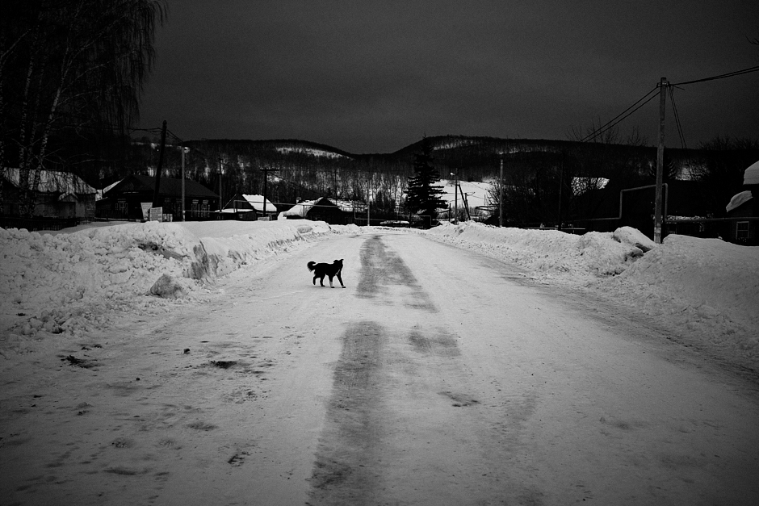

Russia, a country that stretches over a vast expanse of eastern Europe and northern Asia. Once the preeminent republic of the Union of Soviet Socialist Republics, today Russia is a place where I see the harmony of religion, melancholy and dreams of a better future in people. This harmony attracted and inspired me to start my project Dreams from a Northern Country.
Between 2015 and 2020, I made a total of seven visits to Russia and spent over two months in total to document the daily lives of Russian people in the context of their social environment. I have extensively travelled in St. Petersburg, Moscow and the various towns of the Bashkortostan Republic, the first ethnic autonomy of Russia located between the Volga River and the Ural Mountains.
Dreams from a Northern Country showcases the human landscapes of the largest country in the world, with their dreams and wishes, their religion, hard-to-reach goals and their neverending hope.


 



1 / 30